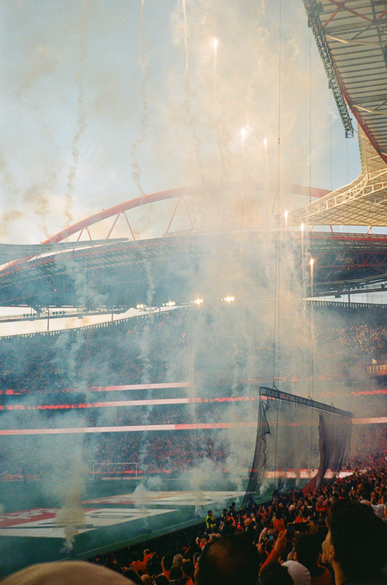
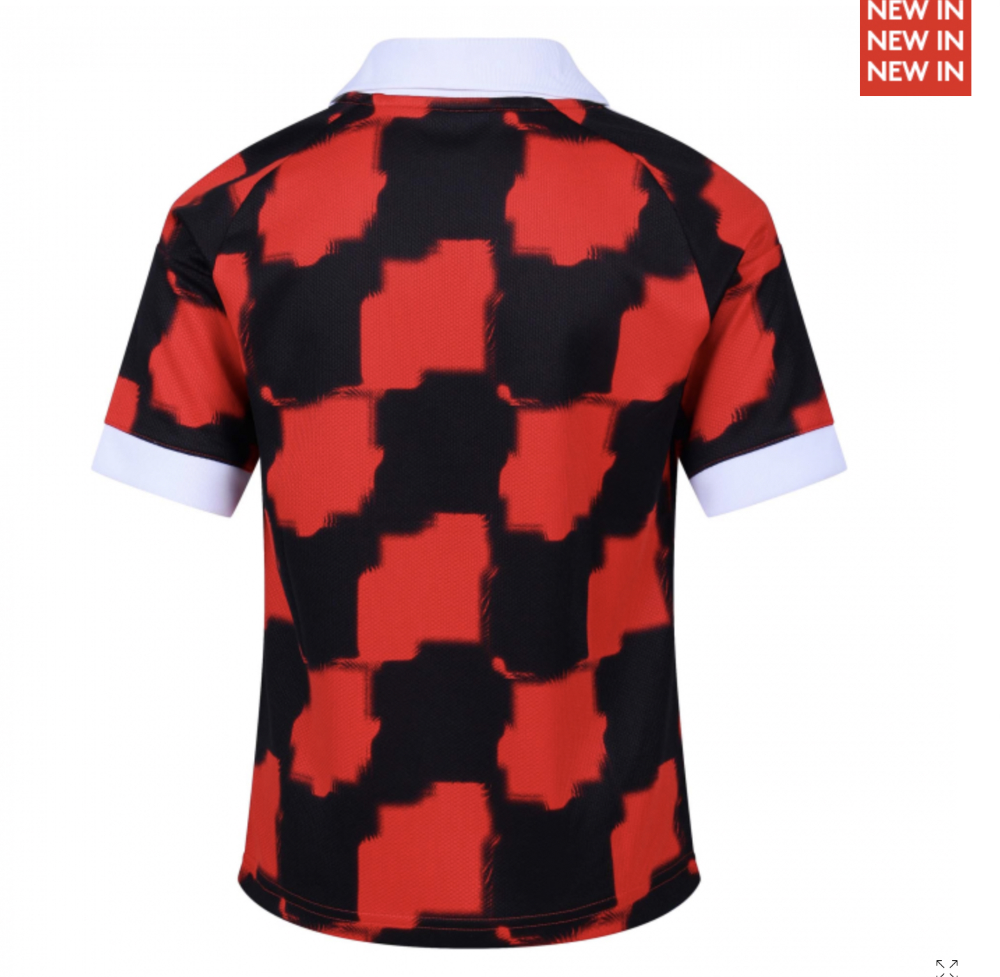
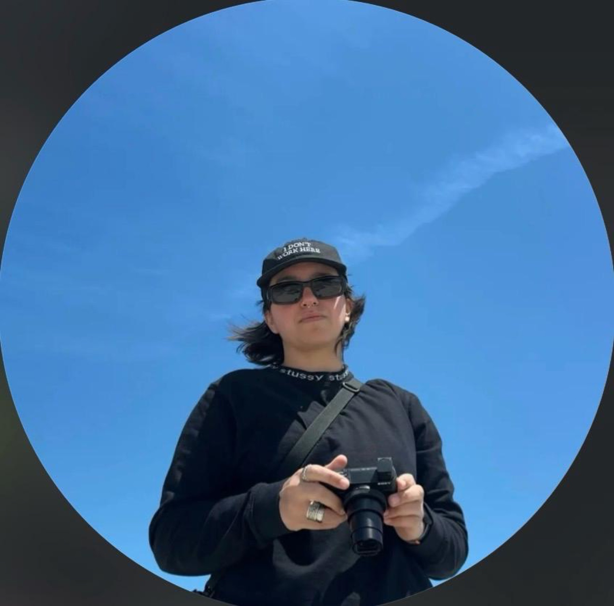

Videographer
Photographer
Content creator
Hi Fulham,
I’m Carolina.
Creative application · 2026
Scroll
01 / Introduction
Photography and football are two things I genuinely love. The photographer job presented opportunity to bring them together that immediately caught my attention.
I’d love the chance to help capture the people, moments and personality behind the club as it continues to grow.
02 / About
Behind
the lens.
Ready for the team

I’m Carolina Lopes, a digital content creator specialising in video production, editing and photography.
From film intern to managing content end-to-end, I’ve built a career around producing visually compelling,
social-first media for brands and organisations.
Premiere ProDaVinci ResolveLightroomPhotoshop
CanonSonyBlackmagicRED Komodo
LanguagesEnglish + Portuguese
Explore my full portfolio ↗
04 / Experience
From intern
to manager.
Digital Content ManagerOct 2025 — Present
Digital Content ProducerApr 2024 — Oct 2025
Film InternNov 2023 — Apr 2024
Progressed from intern to manager, leading digital content end-to-end, producing social-first photo and video for diverse clients, and managing freelancers.

Freelance
Filmmaker & content creator
Production + social content2020 — 2023
Camera trainee on Joe Lycett’s short film Linda, runner on various productions, and social content creator for clients including Sumol and Rosanna Corfe.
Birmingham City University
Education